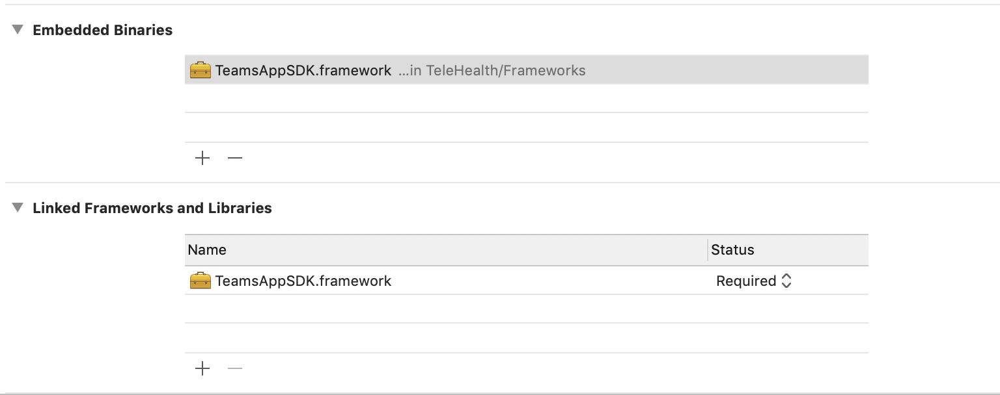
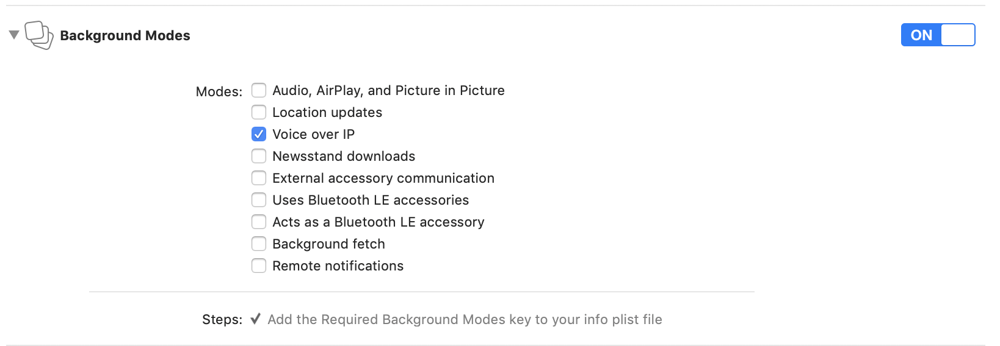

Getting Started with Microsoft Teams Mobile SDK
Prerequisite
- X-code version: 10.2 or higher
- Swift version: Swift 4 or higher
- Deployment Target: 10 or higher
Project Setup
Download Teams SDK Bundle and unarchive it. You will find TeamsAppSDK.framework for both simulator and device separately. Follow the below setps1. Copy TeamsAppSDK.framework folder into your application project folder.
2. Embed framework into your application.
- In your app’s Project Navigator, select your project. In the Editor pane, go to General tab -> Open Embedded Binaries.
- Click the + button to add a new framework. Click "Add Other" to navigate to where you just copied the TeamsAppSDK.framework. Add TeamsAppSDK.framework as an "Embedded Binary" (not a "Linked Framework").

Add the below script to it
#!/bin/sh
pushd "${TARGET_BUILD_DIR}"/"${PRODUCT_NAME}".app/Frameworks/TeamsAppSDK.framework/Frameworks
for EACH in *.framework; do
echo "-- signing ${EACH}"
/usr/bin/codesign --force --deep --sign "${EXPANDED_CODE_SIGN_IDENTITY}" --entitlements "${TARGET_TEMP_DIR}/${PRODUCT_NAME}.app.xcent"
--timestamp=none $EACH
done
popd
echo "BUILD DIR ${TARGET_BUILD_DIR}"
pushd "${TARGET_BUILD_DIR}"/"${PRODUCT_NAME}".app/Frameworks/TeamsAppSDK.framework/Frameworks
for EACH in *.framework; do
echo "-- signing ${EACH}"
/usr/bin/codesign --force --deep --sign "${EXPANDED_CODE_SIGN_IDENTITY}" --entitlements "${TARGET_TEMP_DIR}/${PRODUCT_NAME}.app.xcent"
--timestamp=none $EACH
done
popd
echo "BUILD DIR ${TARGET_BUILD_DIR}"
4. Configure the information property list file (Info.plist) that contains data about your app.
- Define and provide a usage description of all the system’s privacy-sensitive data accessed by the framework in Info.plist as below
- Privacy — Photo Library Usage Description
- Privacy — Microphone Usage Description
- Privacy — Camera Usage Description
- Privacy — Contacts Usage Description
- Privacy — Photo Library Additions Usage Description
- Select your app target and click Capabilities tab.
- Turn on the Keychain Sharing capability.
- Add com.microsoft.intune.mam to the keychain group.
- Select your app target and click Capabilities tab.
- Turn on Background Modes if not done so already and select checkbox for Voice over IP

- In the Project Navigator, select your project, go to the Editor pane, select Project -> Build Settings -> select All tab -> Build Options -> Enable Bitcode = NO
Using Teams SDK APIs
Object-c
[MSTUIApplication.sharedInstance initialize];
[MSTUIApplication.sharedInstance joinMeetingWith:meetingUrl participantName:name error:error];
Swift
MSTUIApplication.sharedInstance()?.initialize();
MSTUIApplication.sharedInstance()?.joinMeeting(with: urlString, participantName: participantName, error: &error);